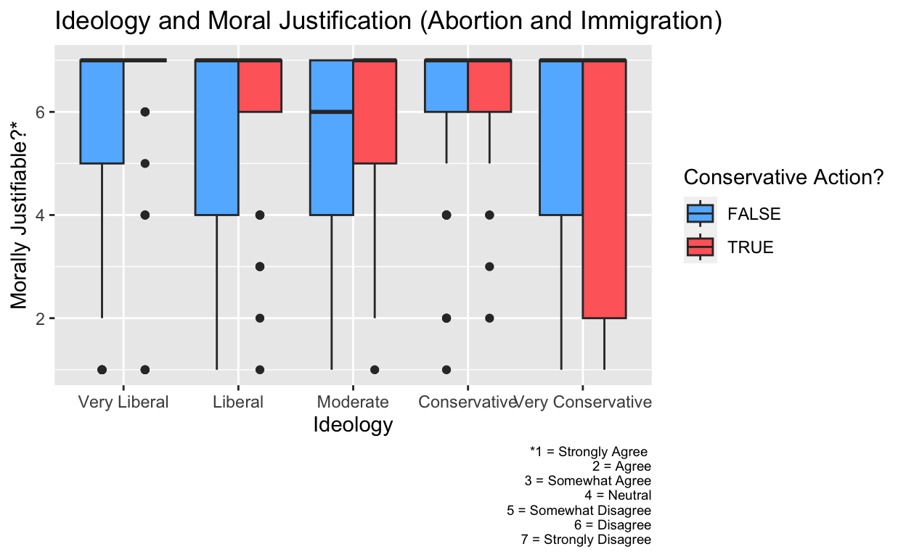

How does political ideology impact how people perceive if an act of political violence is moral justifiable?
In a time of heightened political discourse, there has been a rise in targeted actions meant to advance a certain idea of justice or a supposed political agenda. As American culture becomes increasingly polarized and politicized, there is also an increase in sentiment around the willingness of people to use violence as a means of political strategy. We have seen this phenomenon perpetuated in ideological circles, with different sides believing themselves to have the moral legitimacy to advance their agendas through any means necessary - most infamously reflected in the January 6th Attack on Capitol Hill. How do our political leanings influence the extent to which we morally justify an act of political violence?
In this study, I aim to answer the question of how political ideology affects the moral legitimacy given to situations of political violence, specifically as actions appearing to align with the agenda of a particular ideology. I hypothesize that individuals view actions of political violence as more morally justifiable if it aligns with their political agenda or cause. For example, someone identifying as very conservative may view an attack on an organization advocating for abortion rights as more morally permissible than an individual identifying as liberal or moderate. This is an important discussion as it calls into question how our perception of morality changes when we are faced with an action that serves our interests or ideals. Think about self-defense: the court of public opinion usually understands that violence for the purpose of protecting yourself from an immediate threat can be morally justifiable. Seemingly objective views of what’s right and wrong - violence most times being seen as negative - may warp and shift once we discover that the perpetrators or victims stand in accordance with our values. Understanding this relationship will help us better understand why narratives around political violence exist and how policymakers can account for these trends when combating political violence and terrorism in the United States.
Data
political_violence <- political_violence_data |>
select(-c(starttime, endtime, parentyn_1, parentyn_2, parentyn_3, parentyn_98)) |>
rename(moral_just = ucl_1_1, political_strategy = ucl_1_2, terrorism = ucl_1_3) |>
filter(ideo5 == 1:5) |>
mutate(
ideology = case_when(
ideo5 == 1 ~ "Very Liberal",
ideo5 == 2 ~ "Liberal",
ideo5 == 3 ~ "Moderate",
ideo5 == 4 ~ "Conservative",
ideo5 == 5 ~ "Very Conservative"
))My data is from the Harvard Database and is called “Other People’s Terrorism: Ideology and the Perceived Legitimacy of Political Violence”, a survey-based cross-sectional study conducted on 3,640 Americans in May 2021 by the premier survey firm YouGov, authored by Julie Norman (https://doi.org/10.7910/DVN/RHYALC). The survey recorded demographics such as racial/ethic classification, age, income group, education level, political party, and most importantly in this case political ideology. In the YouGov survey, participants identified their political ideology (ideo5) on a scale from 1-6:
1 = “Very Liberal”,
2 = “Liberal”,
3 = “Moderate”,
4 = “Conservative”,
5 = “Very Conservative”
6 = “Not Sure” [For the purposes of this research, this classification will not be utilized]
The survey then presented the participants with 12 scenarios of political violence across three contentious policy areas: abortion, environmental protection (climate change), and immigration.
A man was convicted of bombing an organization that advocates for increasing access to abortion. The attack caused no injuries.
A man was convicted of bombing an organization that advocates for increasing access to abortion. The attack caused multiple casualties.
A man was convicted of bombing an organization that advocates for restricting access to abortion. The attack caused no injuries.
A man was convicted of bombing an organization that advocates for restricting access to abortion. The attack caused multiple casualties.
A man was convicted of bombing an organization that advocates for environmental protections. The attack caused no injuries.
A man was convicted of bombing an organization that advocates for environmental protections. The attack caused multiple casualties.
A man was convicted of bombing an organization that advocates for fossil fuel interests. The attack caused no injuries.
A man was convicted of bombing an organization that advocates for fossil fuel interests. The attack caused multiple casualties.
A man was convicted of bombing an organization that advocates for less restrictive immigration laws. The attack caused no injuries.
A man was convicted of bombing an organization that advocates for less restrictive immigration laws. The attack caused multiple casualties.
A man was convicted of bombing an organization that advocates for more restrictive immigration laws. The attack caused no injuries.
A man was convicted of bombing an organization that advocates for more restrictive immigration laws. The attack caused multiple casualties.
Each participants randomly received one of the scenarios above and then was asked this question:
To what extent do you agree or disagree with the following statements?
- The action was morally justifiable (
ucl_1_1) - The action was strategic for achieving a political end (
ucl_1_2) - The action was terrorism (
ucl_1_3)
The answers were measured on a scale from 1-7: 1 = Strongly agree, 2 = Agree, 3 = Somewhat agree, 4 = Neutral, 5 = Somewhat disagree, 6 = Disagree, 7 = Strongly disagree
For the purposes of my project and answering my research questions, my key dependent variable of interest will be ucl_1_1, renamed as moral_just - how morally justifiable the participants saw the scenario they were exposed too in the survey. Below is a plot visualized the main outcome of interest, moral justification (where the higher the value, the less justifiable). My research will focus on the relationship between moral_just and ideo5, the ideology each participant identified with; both the key independent and dependent variables are measured in the survey on a scale system (as noted above). As seen in the histogram below, the distribution is skewed to the left, meaning that most of the participants in the survey answered that they saw their given action of political violence morally unjustified.
Distribution Plot Summary of Dependent Variable
moral_just_plot_gen <- political_violence |>
ggplot(mapping = aes(x = moral_just
)) +
geom_histogram(binwidth = 1) +
labs(
title = "Distribution of Responses to Moral Justification Question",
x = "Average Moral Justification*",
y = "Number of Participants",
caption = "*1 = Strongly Agree
2 = Agree
3 = Somewhat Agree
4 = Neutral
5 = Somewhat Disagree
6 = Disagree
7 = Strongly Disagree") +
theme(plot.caption = element_text(size = 7))
moral_just_plot_gen
Results
Effect of Ideology on Moral Legitamacy (Abortion and Immigration)

In the above visualization, I sought to examine whether ideology impacts how individuals view of political violent action as moral justifiable. I decided to narrow my scope to only include scenarios involving abortion or immigration services in order to get a more refined look at extremely controversial issues.
Based on the result of my boxplot, conservatives and liberals tend to see an action as justifiable when it aligns with their policy views. Individuals that identified as very conservative have more spread than liberals in their moral reactions to politically violent actions that align with their policy values, with their IQR beginning at Agree (2). I also noticed how, except for those identifying as conservative (where there was no difference) and very conservative, there was more variation when participants responded to a more liberal-leaning action of political violence than conservative-leaning actions. It is important to note that the median for all groups appears to strongly disagree that actions of political violence are justifiable; only moderates when thinking of a more “liberal-minded” action have a slightly higher median at 6 (“Disagree”). Through this visualization, I saw that while conservatives, moderates, and liberals averagely strongly disagree that political violence is morally justified, they tend to be more willing to justify actions that align with their political beliefs - and this moral justification is exacerbated as ideology veers farther to the right. For example, a conservative is more likely to justify a man bombing an organization that advocates for less immigration restriction than one that advocated for more.
Main Variable Regression
| Regression | |
|---|---|
| Very Liberal | 6.040 |
| s.e. = 0.180 | |
| p = <0.001 | |
| Liberal | −0.095 |
| s.e. = 0.242 | |
| p = 0.694 | |
| Moderate | −0.418 |
| s.e. = 0.221 | |
| p = 0.059 | |
| Very Conservative | −0.683 |
| s.e. = 0.265 | |
| p = 0.010 | |
| Num.Obs. | 624 |
| R2 | 0.016 |
| R2 Adj. | 0.010 |
The coefficient of the intercept, as represented by “very liberal” is 6.040, meaning that individuals who identified as “very liberal” have an estimated moral justifiability score of 6.040, and thus averagely disagree that political violence is morally justifiable. Liberals have a coefficient of −0.095, meaning that those identified as liberal have an average justifiability score that is 0.095 less than those identified as very liberal. However, as the p-value (0.694) is greater than the alpha level of 0.05, this result is not statistically significant and we cannot reject the null hypothesis that ideology has no effect on whether one thinks an action of political violence moral justifiable. This is reasonable as the “very liberal” and “liberal” groups are most likely to have scores close in similarity. The coefficient of the moderate group was −0.418, meaning that those identified as moderate have an average justifiability score that is 0.418 less than those identified as very liberal. As the p-value is 0.059, this is marginally significant (as it is approximately equal to the alpha level of 0.05), meaning that we can tentatively reject the null hypothesis, but note that this is not a strong case for conclusion. The coefficient of the “very conservative” group was −0.683, meaning that those identified as very conservative have an average justifiability score that is 0.683 less than those identified as very liberal. As the p-value is 0.010, this is statistically significant (as it is less than the alpha level of 0.05), meaning that we can reject the null hypothesis. The regression proved that at the extremes - “very liberal” and “very conservative” - there is an evident difference in responses to the question of moral justification impacted by ideology.
Distribution Plot Summary of Dependent Variable (By Ideology)
political_violence$ideology <- factor(political_violence$ideology, c("Very Liberal", "Liberal", "Moderate", "Conservative", "Very Conservative"))
moral_just_plot <- political_violence |>
ggplot(mapping = aes(x = moral_just
)) +
geom_histogram(binwidth = 1) +
facet_wrap(~ideology) +
labs(
title = "Distribution of Responses to Moral Justification Question (Ideology)",
x = "Average Moral Justification*",
y = "Number of Participants",
caption = "*1 = Strongly Agree
2 = Agree
3 = Somewhat Agree
4 = Neutral
5 = Somewhat Disagree
6 = Disagree
7 = Strongly Disagree") +
theme(plot.caption = element_text(size = 5))
moral_just_plot
Above is an updated distribution of responses to the moral justification question, as relative to ideology. It affirms the prior observation that most of the data is skewed skewed to the left, meaning that most of the participants did not see their respective scenario of political violence as moral justifiable. The distribution are interestingly depicts the analysed regression, where there is a clear difference between the moral justification responses of individuals identifying as very liberal and those identifying as very conservative. Contrary to the liberal-leaning plots, more “very conservative” individuals answered that they strongly agree that the action was morally justified and less answered that they believe the action was not morally justified. These results display a growing theme that conservatives tend to be more varied in their perceptions of political violence.
Conclusion
In conclusion, based on my research, it is evident that there is a relationship between political ideology and perceptions about the moral justification of political violence. It is important to note that these differences are especially significant when comparing different extremes of the ideological gradient. That is to say that individuals identifying as very liberal will, on average, find political violence not morally justifiable more than those identifying as very conservative. In examining closely-minded ideologies (very liberal/liberal or very conservative/ conservative), these differences in responses regarding moral justification are not as significant. Based on the boxplot, my hypothesis that individuals view actions of political violence as more morally justifiable if it aligns with their political agenda was proven to be correct. However, my hypothesis did not account for the fact that there is an overall difference in moral responses to political violence across political ideologies, as depicted in the regression. I will note that my analysis is limited in that there are many potential confounding variables that are not taken into account in the data, especially since each participant was randomly one of the twelve scenarios. In terms of confounding variables, it would have be interesting and potentially significant to know if any of the participants or someone they know are victims of political violence; this would introduce bias and pose as a threat to inference. My choice to not include the “don’t know” (6) variable in ideo5 may have also influenced my conclusion as it might have been interesting to look at how those without clear ideology view political violence. I would also improve my analysis by expanding the survey questions to add more nuance to what is considered terrorism, and having participants reckon with distinctions between protest and political violence as well as unjust vs just demonstrations. From there, I think we would gain a better idea of where narratives around what political violence is stem from and thus how political ideology pays a factor in it.
library(tidyverse)
library(ggplot2)
library(dplyr)
library(readr)
political_violence_data <- read_csv("~/Downloads/dataverse_files (1)/PoliticalViolence_May21 Client.csv")
political_violence <- political_violence_data |>
select(-c(starttime, endtime, parentyn_1, parentyn_2, parentyn_3, parentyn_98)) |>
rename(moral_just = ucl_1_1, political_strategy = ucl_1_2, terrorism = ucl_1_3) |>
filter(ideo5 == 1:5) |>
mutate(
ideology = case_when(
ideo5 == 1 ~ "Very Liberal",
ideo5 == 2 ~ "Liberal",
ideo5 == 3 ~ "Moderate",
ideo5 == 4 ~ "Conservative",
ideo5 == 5 ~ "Very Conservative"
))
moral_just_plot_gen <- political_violence |>
ggplot(mapping = aes(x = moral_just
)) +
geom_histogram(binwidth = 1) +
labs(
title = "Distribution of Responses to Moral Justification Question",
x = "Average Moral Justification*",
y = "Number of Participants",
caption = "*1 = Strongly Agree
2 = Agree
3 = Somewhat Agree
4 = Neutral
5 = Somewhat Disagree
6 = Disagree
7 = Strongly Disagree") +
theme(plot.caption = element_text(size = 7))
moral_just_plot_gen
ideo_terrorism <- political_violence |>
mutate(
conservative_action = if_else(experiment_split %in% c(1,2,9,10),
"TRUE", "FALSE")) |>
group_by(ideology, conservative_action)
ideo_terrorism$ideology <- fct_relevel(ideo_terrorism$ideology,
"Very Liberal", "Liberal", "Moderate", "Conservative", "Very Conservative")
ideo_terrorism_plot <- ggplot(data = ideo_terrorism,
mapping = aes(x = ideology,
y = moral_just,
fill = conservative_action)) +
geom_boxplot(position = "dodge") + scale_fill_manual(values = c(`FALSE` = "steelblue1", `TRUE` = "indianred1")) +
labs(
x = "Ideology",
y = "Morally Justifiable?*",
title = "Ideology and Moral Justification (Abortion and Immigration)",
caption = "*1 = Strongly Agree
2 = Agree
3 = Somewhat Agree
4 = Neutral
5 = Somewhat Disagree
6 = Disagree
7 = Strongly Disagree",
fill = "Conservative Action?") +
theme(plot.caption = element_text(size = 7))
ideo_terrorism_plot
moral_just_fit <- lm(moral_just ~ ideology, data = political_violence)
names <- c(
"(Intercept)" = "Very Liberal",
"ideologyLiberal" = "Liberal",
"ideologyModerate" = "Moderate",
"ideologyConservative" = "Conservative",
"ideologyVery Conservative" = "Very Conservative"
)
modelsummary::modelsummary(list(Regression = moral_just_fit), statistic = c("s.e. = {std.error}",
"p = {p.value}"),
gof_map = c("nobs", "r.squared", "adj.r.squared"),
coef_map = names)
political_violence$ideology <- factor(political_violence$ideology, c("Very Liberal", "Liberal", "Moderate", "Conservative", "Very Conservative"))
moral_just_plot <- political_violence |>
ggplot(mapping = aes(x = moral_just
)) +
geom_histogram(binwidth = 1) +
facet_wrap(~ideology) +
labs(
title = "Distribution of Responses to Moral Justification Question (Ideology)",
x = "Average Moral Justification*",
y = "Number of Participants",
caption = "*1 = Strongly Agree
2 = Agree
3 = Somewhat Agree
4 = Neutral
5 = Somewhat Disagree
6 = Disagree
7 = Strongly Disagree") +
theme(plot.caption = element_text(size = 5))
moral_just_plot